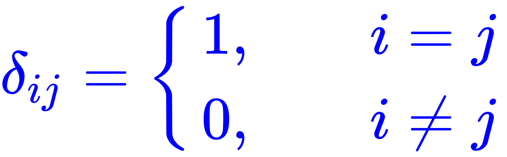
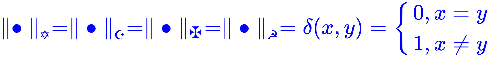

回复
本问题与政治和意识形态都没有关系，纯属「形式主义（数学）」上面的符号选择而已，并且还没有「形式主义（政治）」所带有的贬义色彩。
众所周知，「当代主流数学价值观」的符号体系存在「路径依赖（经济）」，与崇洋媚外等「路径依赖（政治）」贬义色彩也风马牛不相及。
所以，还是「呼召」几位设置为不可名状の学霸「降临」指导：@酱紫君@洪涛@yx3x
在学渣恶补数学的过程中，于中文互联网上，看到部分资料的表达方式甚为接地气。如线性代数当中引入了「克罗内克记号」，用来表示一连串「太一」牢牢把持中央的单位方阵非常方便：
 克罗内克记号 在实分析当中看到反例「度量空间当中紧致集均为有界闭集，但某些度量空间中有界闭集不是紧致集」，举例用到了一个「非我族类其心必异」的「选民范数」定义。在中文互联网上出现的其它国家和民族背景之下语境当中，又称为「阿拉胡阿克巴范数」或「Deus Vult范数」或「锤镰范数」，定义如下
 非我族类其心必异范数 这个范数虽然不如常见的「欧几里得范数」（或曰「距离公式」）更符合「直觉」，但也满足三条公理。而在其定义之下的度量空间当中，只有「有限集」才是紧的。
这个「范数」，与前面的「克罗内克」记号截然相反，似乎不是直接推广而来。那么，反过来的「克罗内克范数」（暂名）也有类似的性质么？
顺便，在计算机科学中用到的「布尔代数」，就是「零壹」之间「你死我活」的二值逻辑，肯定是承认「排中律」的那一拨数学工作者采用的。那么，不承认排中律的直觉主义或构造主义数学流派，是怎么看待二进制的呢？
这三个领域之间的部分结论，似乎不是孤立的突发的偶然的朴素的巧合，其中到底有没有更深层次的数学上的联系呢？
还有，话题当中「比较文学」和「比较政治学」都有，但似乎没有看到「比较数学」的话题，不知道站方能否添加？
本问题与政治和意识形态都没有关系，纯属「形式主义（数学）」上面的符号选择而已，并且还没有「形式主义（政治）」所带有的贬义色彩。
众所周知，「当代主流数学价值观」的符号体系存在「路径依赖（经济）」，与崇洋媚外等「路径依赖（政治）」贬义色彩也风马牛不相及。
所以，还是「呼召」几位设置为不可名状の学霸「降临」指导：@酱紫君@洪涛@yx3x